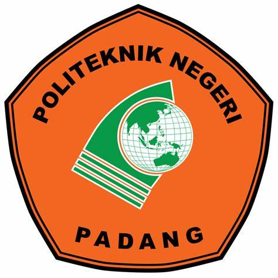
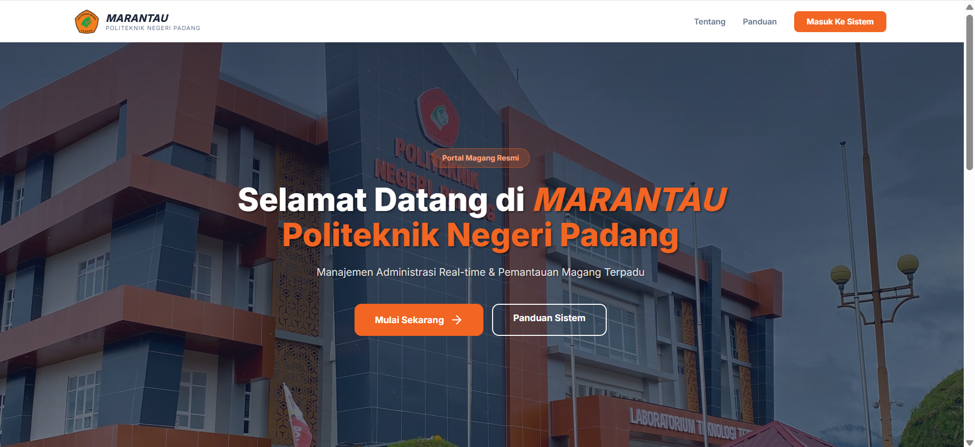
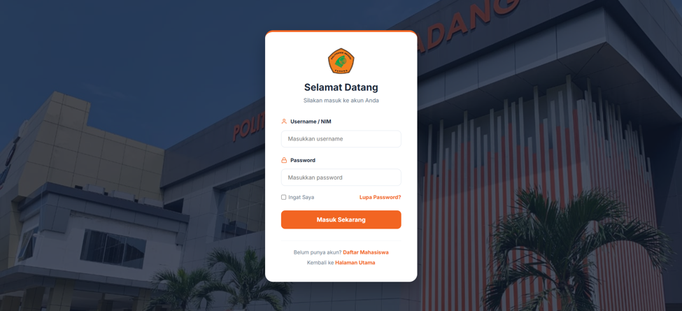

Full-Stack Web Developer (Laravel • MySQL)
MARANTAU PNP (Sistem Informasi Magang)
2025 - 2026


Key Responsibilities & Features:
- Multi-Role Architecture: Merancang sistem manajemen magang terintegrasi untuk mahasiswa, jurusan, unit kerja sama, dan mitra perusahaan di Politeknik Negeri Padang.
- Backend & Database: Membangun logika bisnis dan relasi database MySQL yang kompleks menggunakan framework Laravel.
- Workflow Automation: Mengotomatisasi alur pengajuan surat, validasi berkas, dan pelaporan kemajuan magang.
Laravel 11
MySQL
Relational
Tailwind CSS
REST API
Blade Engine